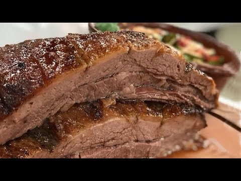

Odin Recipes Website Exercise
Vacío a la parrilla!

Yipee! This is the recipe for Vacío a la parrilla!, one of the most important beef cuts in argentine asado, the other one being the Asado de tira.
If you prefer chicken, Pollo a la parrilla could make your day.
The Vacío is a boneless meat cut from the flank of the cow. Its shape resembles a triangle.
It has a respectable amount of fat that greatly adds to its great taste, and also a layer of cuerito, a thin membrane that, if grilled right, gets all crispy and delicious.
What you will need:
- A whole piece of vacío
- Coarse Salt (fine salt is... acceptable)
- Chimichurri sauce (optional)
- Criolla sauce (optional)
Hell yeah, let's grill it!
- Fire up the coal!
- While still burning with high flame, put the grill on top of the fire and let it heat.
- When hot, use crumpled old newspapers to clean the grill, removing all remains of past asados.
- Wait for the coal to turn to white embers. That's the right time!
- Set the grill beside the embers. Use a shovel to put enough embers below the grill to make a thin layer.
- While the embers get to the right point, lay the vacío flat on a cutting board and slice away the excess fat -you do not want to cut all the fat, just thin the thickest chunks. Also make sure to not cut out the cuerito!
- Set the vacío on the grill with the cuerito facing down.
- Hold your hand over the meat and count 6-8 secs. Then, you should feel your hand starts to burn (take it away, now!) meaning the temperature is just right.
- Add as much coarse salt as you like, and let the meat cook for about 30-40 minutes.
- Turn over -using a clamp, do not puncture the meat because it would lose all its juices- and let cook for another 20/30 minutes.
- Do not leave the asado unattended! Do not go away, jump in the pool or make a wedding proposal... Cooking asado is a heavy burden, you must make sure to keep the temperature right all the time, adding embers as required!
- Cut to 3 cm-wide loafs and serve swiftly, before it gets cold.
Go back to Home